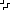
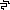

<canvas id="canvas2" width="100" height="100" style="image-rendering: pixelated;"></canvas>


<script>
/*




*/

    var canvas2 = document.getElementById('canvas2');
    var ctx2 = canvas2.getContext('2d');

    function indexToCoords(n) {
        let x = 10 * Math.floor(n % 10)
        let y = 10* (Math.floor(n / 10))
        return [x,y]
    }

    function setup() {
        var cells = [[], [], [], []]
        
        for (let n = 0; n<100; n++) {
            let x = Math.floor(Math.random() * 4)
            cells[x].push(n)
        }
        
        for (let n = 0; n<4; n++) {
            let image = document.getElementById("pattern" + n)
            image.addEventListener('load', e => {
                cells[n].forEach(index => {
                    let xy = indexToCoords(index)
                    ctx2.drawImage(image, xy[0], xy[1]);                  
                })
            })
        }
        setTimeout( () => {checkBorders()}, 1000)
        
    }

    function trace(x, y, blue, green) {
        if (x < 0) return
        if (y < 0) return
        if (x > 99) return
        if (y > 99) return
            var canvas2 = document.getElementById('canvas2');
            var ctx2 = canvas2.getContext('2d');

            var imgd = ctx2.getImageData(x, y, 1, 1);
            var pix = imgd.data;
            if (pix[0] == 255) {
                return //white do nothing
            } else {
                pix[0] = 255 //make it red
                pix[2] = blue
                pix[1] = green
                ctx2.putImageData(imgd, x, y)
                trace(x-1, y, blue, green)
                trace(x+1, y, blue, green)
                trace(x, y-1, blue, green)
                trace(x, y+1, blue, green)

            }
    }

    function blue() {
        return Math.floor(Math.random() * 10) * 25
    }

    function checkBorders() {
        
        console.log("checking borders")
        for (let x = 0; x<100; x++) {
            trace(x, 0, blue(), blue())
            trace(x, 99, blue(), blue())
        }
        for (let y = 0; y<100; y++) {
            trace(0, y, blue(), blue())
            trace(99, y, blue(), blue())
        }
    }

    setup()

    
</script>
